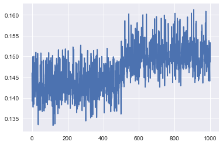
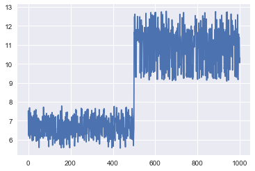
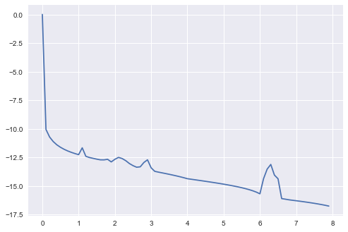
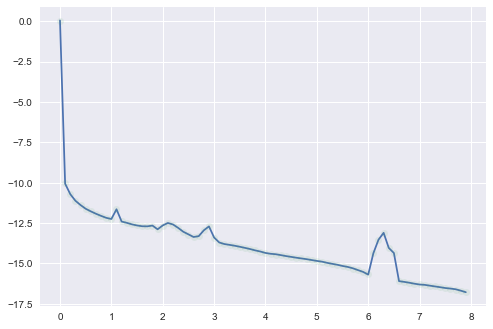

[1]:
from astropy.io import ascii, fits
import pylab as plt
%matplotlib inline
from astropy import wcs
import numpy as np
import xidplus
[2]:
from xidplus import sed
SEDs,df =sed.mrr_templates()
0.0001
0.0001
0.0001
0.0001
[3]:
import pystan
[4]:
code="""
// Fit the hyperparameters of a latent-variable Gaussian process with an
// exponentiated quadratic kernel and a Gaussian likelihood and predict
// out-of-sample observations
data {
int<lower=1> N1;
real x1[N1];
vector[N1] y1;
int<lower=1> N2;
real x2[N2];
}
transformed data {
real delta = 1e-9;
int<lower=1> N = N1 + N2;
real x[N];
for (n1 in 1:N1) x[n1] = x1[n1];
for (n2 in 1:N2) x[N1 + n2] = x2[n2];
}
parameters {
real<lower=0> rho;
real<lower=0> alpha;
real<lower=0> sigma;
vector[N] eta;
}
transformed parameters {
vector[N] f;
{
matrix[N, N] L_K;
matrix[N, N] K = cov_exp_quad(x, alpha, rho);
// diagonal elements
for (n in 1:N)
K[n, n] = K[n, n] + delta;
L_K = cholesky_decompose(K);
f = L_K * eta;
}
}
model {
rho ~ inv_gamma(5, 5);
alpha ~ normal(0, 5);
sigma ~ normal(0, 0.01);
eta ~ normal(0, 1);
y1 ~ normal(f[1:N1], sigma);
}
generated quantities {
vector[N2] y2;
for (n2 in 1:N2)
y2[n2] = normal_rng(f[N1 + n2], sigma);
}
"""
[5]:
sm=pystan.StanModel(model_code=code)
INFO:pystan:COMPILING THE C++ CODE FOR MODEL anon_model_704128430b2e65b20cb8cd7d3976cd8c NOW.
[53]:
red=np.arange(0,8,0.01)
red[0]=0.000001
fit_data={'N1':SEDs[0,0,250:350].size,
'x1':red[250:350],
'y1':np.log10(SEDs[0,0,250:350]),
'N2':1,
'x2':[3]
}
[ ]:
[54]:
fit=sm.sampling(data=fit_data, iter=1000,chains=2)
[55]:
from xidplus.stan_fit import stan_utility as su
[56]:
su.check_div(fit)
0.0 of 1000 iterations ended with a divergence (0.0%)
[57]:
su.check_energy(fit)
[58]:
su.check_treedepth(fit)
1000 of 1000 iterations saturated the maximum tree depth of 10 (100.0%)
Run again with max_depth set to a larger value to avoid saturation
[59]:
samples=fit.extract()
[11]:
plt.plot(red[250:350],np.median(samples['f'],axis=0)[0:-1])
plt.plot(red,np.log10(SEDs[0,0,:]))
---------------------------------------------------------------------------
NameError Traceback (most recent call last)
<ipython-input-11-b18d5d672aaa> in <module>()
----> 1 plt.plot(red[250:350],np.median(samples['f'],axis=0)[0:-1])
2 plt.plot(red,np.log10(SEDs[0,0,:]))
NameError: name 'samples' is not defined
[68]:
plt.plot(samples['rho'])
[68]:
[<matplotlib.lines.Line2D at 0x122185eb8>]

[70]:
plt.plot(samples['alpha'])
[70]:
[<matplotlib.lines.Line2D at 0x122318470>]

[ ]:
[4]:
code="""
// Fit the hyperparameters of a latent-variable Gaussian process with an
// exponentiated quadratic kernel and a Gaussian likelihood and predict
// out-of-sample observations
data {
int<lower=1> N1;
real x1[N1];
vector[N1] y1;
int<lower=1> N2;
real x2[N2];
}
transformed data {
real delta = 1e-9;
real rho = 0.15;
real alpha = 10;
real sigma = 0.01;
int<lower=1> N = N1 + N2;
real x[N];
for (n1 in 1:N1) x[n1] = x1[n1];
for (n2 in 1:N2) x[N1 + n2] = x2[n2];
}
parameters {
vector[N] eta;
}
transformed parameters {
vector[N] f;
{
matrix[N, N] L_K;
matrix[N, N] K = cov_exp_quad(x, alpha, rho);
// diagonal elements
for (n in 1:N)
K[n, n] = K[n, n] + delta;
L_K = cholesky_decompose(K);
f = L_K * eta;
}
}
model {
eta ~ normal(0, 1);
y1 ~ normal(f[1:N1], sigma);
}
generated quantities {
vector[N2] y2;
for (n2 in 1:N2)
y2[n2] = normal_rng(f[N1 + n2], sigma);
}
"""
[5]:
sm=pystan.StanModel(model_code=code)
INFO:pystan:COMPILING THE C++ CODE FOR MODEL anon_model_3586be1a4bf1cb2b85d5c403b41ae979 NOW.
[8]:
red=np.arange(0,8,0.1)
red[0]=0.000001
fit_data={'N1':SEDs[0,0,:].size,
'x1':red,
'y1':np.log10(SEDs[0,0,:]),
'N2':1,
'x2':[3]
}
[9]:
fit=sm.sampling(data=fit_data, iter=1000,chains=2)
[10]:
fit
[10]:
Inference for Stan model: anon_model_3586be1a4bf1cb2b85d5c403b41ae979.
2 chains, each with iter=1000; warmup=500; thin=1;
post-warmup draws per chain=500, total post-warmup draws=1000.
mean se_mean sd 2.5% 25% 50% 75% 97.5% n_eff Rhat
eta[0] 3.5e-3 3.2e-5 1.0e-3 1.5e-3 2.8e-3 3.5e-3 4.2e-3 5.6e-3 1000 1.0
eta[1] -1.68 6.7e-5 2.1e-3 -1.69 -1.68 -1.68 -1.68 -1.68 1000 1.0
eta[2] 0.55 1.2e-4 3.7e-3 0.54 0.54 0.55 0.55 0.55 1000 1.0
eta[3] -1.71 1.8e-4 5.8e-3 -1.72 -1.71 -1.71 -1.71 -1.7 1000 1.0
eta[4] 0.35 2.6e-4 8.4e-3 0.34 0.35 0.35 0.36 0.37 1000 1.0
eta[5] -1.44 3.7e-4 0.01 -1.47 -1.45 -1.44 -1.44 -1.42 926 1.0
eta[6] 0.06 4.8e-4 0.01 0.03 0.05 0.06 0.07 0.09 841 1.0
eta[7] -1.19 5.9e-4 0.02 -1.22 -1.2 -1.19 -1.18 -1.16 781 1.0
eta[8] -0.18 6.8e-4 0.02 -0.21 -0.19 -0.18 -0.16 -0.14 751 1.0
eta[9] -1.0 7.6e-4 0.02 -1.04 -1.02 -1.0 -0.99 -0.97 716 1.0
eta[10] -0.34 8.3e-4 0.02 -0.38 -0.36 -0.34 -0.33 -0.3 672 1.0
eta[11] -0.66 9.1e-4 0.02 -0.71 -0.68 -0.66 -0.64 -0.62 623 1.01
eta[12] -0.94 9.6e-4 0.02 -0.98 -0.96 -0.94 -0.92 -0.89 587 1.01
eta[13] -0.15 9.8e-4 0.02 -0.2 -0.17 -0.15 -0.14 -0.11 571 1.0
eta[14] -1.23 9.7e-4 0.02 -1.28 -1.25 -1.23 -1.22 -1.19 586 1.0
eta[15] -0.08 9.4e-4 0.02 -0.13 -0.1 -0.08 -0.07 -0.04 630 1.0
eta[16] -1.18 9.3e-4 0.02 -1.23 -1.2 -1.18 -1.17 -1.13 676 1.0
eta[17] -0.19 9.4e-4 0.02 -0.24 -0.21 -0.19 -0.18 -0.15 703 1.0
eta[18] -1.03 9.6e-4 0.03 -1.08 -1.05 -1.03 -1.02 -0.98 704 1.0
eta[19] -0.42 9.9e-4 0.03 -0.47 -0.44 -0.42 -0.4 -0.37 679 1.0
eta[20] -0.73 1.0e-3 0.03 -0.78 -0.75 -0.73 -0.71 -0.68 641 1.0
eta[21] -0.63 1.1e-3 0.03 -0.68 -0.65 -0.63 -0.61 -0.58 616 1.0
eta[22] -0.66 1.1e-3 0.03 -0.71 -0.68 -0.66 -0.64 -0.61 612 1.0
eta[23] -0.69 1.1e-3 0.03 -0.74 -0.71 -0.69 -0.67 -0.64 622 1.0
eta[24] -0.69 1.1e-3 0.03 -0.74 -0.7 -0.69 -0.67 -0.63 638 1.0
eta[25] -0.69 1.1e-3 0.03 -0.74 -0.7 -0.69 -0.67 -0.63 645 1.0
eta[26] -0.71 1.1e-3 0.03 -0.76 -0.73 -0.71 -0.69 -0.65 649 1.0
eta[27] -0.64 1.0e-3 0.03 -0.69 -0.66 -0.64 -0.62 -0.59 665 1.0
eta[28] -0.62 1.0e-3 0.03 -0.68 -0.64 -0.62 -0.61 -0.57 662 1.0
eta[29] -0.7 1.0e-3 0.03 -0.75 -0.72 -0.7 -0.68 -0.65 679 1.0
eta[30] -0.85 9.8e-4 0.03 -0.9 -0.87 -0.85 -0.83 -0.8 705 1.0
eta[31] -0.5 9.6e-4 0.03 -0.55 -0.51 -0.5 -0.48 -0.45 735 1.0
eta[32] -0.95 9.5e-4 0.03 -1.0 -0.97 -0.95 -0.93 -0.9 740 1.0
eta[33] -0.49 9.5e-4 0.03 -0.54 -0.51 -0.49 -0.48 -0.45 723 1.0
eta[34] -0.92 9.5e-4 0.03 -0.97 -0.94 -0.92 -0.9 -0.87 703 1.0
eta[35] -0.56 9.6e-4 0.02 -0.61 -0.57 -0.56 -0.54 -0.51 680 1.0
eta[36] -0.87 9.6e-4 0.02 -0.92 -0.89 -0.87 -0.85 -0.82 675 1.0
eta[37] -0.62 9.7e-4 0.03 -0.67 -0.64 -0.62 -0.6 -0.57 686 1.0
eta[38] -0.83 1.0e-3 0.03 -0.88 -0.85 -0.83 -0.81 -0.78 619 1.0
eta[39] -0.67 9.8e-4 0.03 -0.72 -0.69 -0.67 -0.65 -0.62 687 1.0
eta[40] -0.81 10.0e-4 0.03 -0.86 -0.83 -0.81 -0.79 -0.76 673 1.0
eta[41] -0.69 1.0e-3 0.03 -0.74 -0.71 -0.69 -0.67 -0.63 664 1.0
eta[42] -0.8 1.0e-3 0.03 -0.85 -0.82 -0.8 -0.78 -0.75 659 1.0
eta[43] -0.71 1.0e-3 0.03 -0.76 -0.73 -0.71 -0.69 -0.65 655 1.0
eta[44] -0.79 1.0e-3 0.03 -0.85 -0.81 -0.79 -0.77 -0.74 656 1.0
eta[45] -0.73 1.0e-3 0.03 -0.78 -0.74 -0.73 -0.71 -0.67 654 1.01
eta[46] -0.78 1.0e-3 0.03 -0.84 -0.8 -0.78 -0.76 -0.73 648 1.01
eta[47] -0.74 1.1e-3 0.03 -0.79 -0.76 -0.74 -0.72 -0.69 649 1.01
eta[48] -0.78 1.1e-3 0.03 -0.83 -0.8 -0.78 -0.76 -0.73 643 1.01
eta[49] -0.75 1.1e-3 0.03 -0.81 -0.77 -0.75 -0.74 -0.7 625 1.01
eta[50] -0.78 1.1e-3 0.03 -0.83 -0.8 -0.78 -0.76 -0.73 609 1.01
eta[51] -0.76 1.1e-3 0.03 -0.82 -0.78 -0.76 -0.75 -0.71 599 1.01
eta[52] -0.78 1.1e-3 0.03 -0.83 -0.8 -0.78 -0.76 -0.73 607 1.01
eta[53] -0.77 1.1e-3 0.03 -0.82 -0.79 -0.77 -0.76 -0.72 618 1.01
eta[54] -0.79 1.1e-3 0.03 -0.84 -0.81 -0.79 -0.77 -0.74 625 1.0
eta[55] -0.78 1.1e-3 0.03 -0.83 -0.8 -0.79 -0.77 -0.73 625 1.0
eta[56] -0.79 1.0e-3 0.03 -0.84 -0.81 -0.79 -0.78 -0.74 635 1.0
eta[57] -0.8 1.0e-3 0.03 -0.85 -0.82 -0.8 -0.78 -0.75 639 1.0
eta[58] -0.8 9.8e-4 0.02 -0.85 -0.82 -0.8 -0.79 -0.76 638 1.0
eta[59] -0.81 9.7e-4 0.02 -0.86 -0.83 -0.81 -0.8 -0.77 637 1.0
eta[60] -0.82 9.8e-4 0.02 -0.87 -0.84 -0.82 -0.81 -0.77 637 1.0
eta[61] -0.35 10.0e-4 0.03 -0.4 -0.37 -0.35 -0.33 -0.3 628 1.0
eta[62] -1.11 1.0e-3 0.03 -1.16 -1.12 -1.1 -1.09 -1.06 624 1.0
eta[63] -0.2 1.0e-3 0.03 -0.25 -0.21 -0.2 -0.18 -0.14 629 1.0
eta[64] -1.46 1.0e-3 0.03 -1.52 -1.48 -1.46 -1.45 -1.41 644 1.0
eta[65] 0.05 1.1e-3 0.03-5.2e-3 0.03 0.04 0.06 0.1 628 1.0
eta[66] -2.06 1.1e-3 0.03 -2.11 -2.08 -2.06 -2.04 -2.01 591 1.0
eta[67] 0.61 1.1e-3 0.03 0.56 0.59 0.61 0.63 0.66 562 1.0
eta[68] -2.33 1.1e-3 0.03 -2.38 -2.35 -2.33 -2.31 -2.28 545 1.0
eta[69] 0.56 1.1e-3 0.03 0.51 0.54 0.56 0.58 0.61 538 1.0
eta[70] -2.08 1.1e-3 0.03 -2.13 -2.1 -2.08 -2.07 -2.03 547 1.0
eta[71] 0.21 1.1e-3 0.03 0.16 0.2 0.22 0.23 0.26 554 1.0
eta[72] -1.73 1.1e-3 0.02 -1.78 -1.75 -1.73 -1.72 -1.68 550 1.0
eta[73] -0.12 1.0e-3 0.02 -0.17 -0.14 -0.12 -0.11 -0.08 566 1.0
eta[74] -1.45 9.9e-4 0.02 -1.49 -1.46 -1.45 -1.43 -1.4 612 1.0
eta[75] -0.38 9.5e-4 0.02 -0.42 -0.39 -0.38 -0.36 -0.33 675 1.0
eta[76] -1.25 9.1e-4 0.02 -1.29 -1.26 -1.25 -1.23 -1.2 738 1.0
eta[77] -0.55 8.8e-4 0.03 -0.6 -0.57 -0.55 -0.54 -0.5 827 1.0
eta[78] -1.12 8.1e-4 0.03 -1.17 -1.13 -1.12 -1.1 -1.07 1000 1.0
eta[79] -0.67 8.2e-4 0.03 -0.72 -0.69 -0.67 -0.65 -0.62 1000 1.0
eta[80] -0.01 0.03 1.03 -2.0 -0.71 0.02 0.72 1.97 1000 1.0
f[0] 0.04 3.2e-4 0.01 0.02 0.03 0.04 0.04 0.06 1000 1.0
f[1] -10.04 3.2e-4 0.01 -10.06 -10.05 -10.04 -10.04 -10.02 1000 1.0
f[2] -10.71 3.2e-4 0.01 -10.73 -10.71 -10.71 -10.7 -10.69 1000 1.0
f[3] -11.1 3.1e-4 9.8e-3 -11.12 -11.11 -11.1 -11.1 -11.09 1000 1.0
f[4] -11.39 3.3e-4 0.01 -11.41 -11.4 -11.39 -11.38 -11.37 1000 1.0
f[5] -11.61 3.1e-4 9.8e-3 -11.62 -11.61 -11.61 -11.6 -11.59 1000 1.0
f[6] -11.78 3.3e-4 0.01 -11.8 -11.79 -11.78 -11.78 -11.76 901 1.0
f[7] -11.93 3.1e-4 9.7e-3 -11.95 -11.93 -11.93 -11.92 -11.91 1000 1.0
f[8] -12.05 3.8e-4 0.01 -12.07 -12.06 -12.05 -12.04 -12.03 774 1.0
f[9] -12.16 3.1e-4 9.9e-3 -12.18 -12.17 -12.16 -12.15 -12.14 1000 1.0
f[10] -12.25 3.3e-4 9.8e-3 -12.27 -12.26 -12.25 -12.25 -12.23 890 1.0
f[11] -11.65 3.8e-4 9.8e-3 -11.67 -11.66 -11.65 -11.65 -11.63 673 1.0
f[12] -12.4 3.1e-4 9.7e-3 -12.42 -12.4 -12.4 -12.39 -12.38 1000 1.0
f[13] -12.5 3.2e-4 0.01 -12.52 -12.51 -12.5 -12.5 -12.48 1000 1.0
f[14] -12.58 3.3e-4 0.01 -12.6 -12.58 -12.58 -12.57 -12.56 1000 1.0
f[15] -12.65 3.1e-4 9.9e-3 -12.67 -12.65 -12.65 -12.64 -12.63 1000 1.0
f[16] -12.71 3.1e-4 9.8e-3 -12.72 -12.71 -12.71 -12.7 -12.69 1000 1.0
f[17] -12.71 3.7e-4 0.01 -12.73 -12.72 -12.71 -12.7 -12.69 785 1.0
f[18] -12.66 3.3e-4 0.01 -12.68 -12.67 -12.66 -12.65 -12.64 1000 1.0
f[19] -12.89 3.1e-4 9.7e-3 -12.91 -12.89 -12.89 -12.88 -12.87 1000 1.0
f[20] -12.66 3.2e-4 0.01 -12.68 -12.67 -12.66 -12.65 -12.64 1000 1.0
f[21] -12.49 3.2e-4 9.9e-3 -12.51 -12.5 -12.49 -12.49 -12.47 942 1.0
f[22] -12.59 3.2e-4 0.01 -12.61 -12.6 -12.59 -12.59 -12.57 1000 1.0
f[23] -12.78 3.2e-4 9.9e-3 -12.8 -12.79 -12.78 -12.77 -12.76 947 1.0
f[24] -13.03 3.1e-4 9.8e-3 -13.05 -13.04 -13.03 -13.02 -13.01 1000 1.0
f[25] -13.21 3.2e-4 0.01 -13.24 -13.22 -13.21 -13.21 -13.19 1000 1.0
f[26] -13.35 3.4e-4 9.9e-3 -13.37 -13.36 -13.35 -13.35 -13.33 842 1.0
f[27] -13.32 3.1e-4 9.8e-3 -13.34 -13.32 -13.32 -13.31 -13.3 1000 1.0
f[28] -12.94 3.1e-4 9.9e-3 -12.96 -12.95 -12.94 -12.93 -12.92 1000 1.0
f[29] -12.7 3.3e-4 0.01 -12.73 -12.71 -12.7 -12.7 -12.68 1000 1.0
f[30] -13.41 3.2e-4 0.01 -13.43 -13.41 -13.41 -13.4 -13.39 985 1.0
f[31] -13.71 3.1e-4 9.9e-3 -13.73 -13.72 -13.71 -13.71 -13.69 1000 1.0
f[32] -13.78 3.2e-4 0.01 -13.8 -13.79 -13.78 -13.77 -13.76 1000 1.0
f[33] -13.85 3.2e-410.0e-3 -13.87 -13.85 -13.85 -13.84 -13.83 1000 1.0
f[34] -13.91 3.2e-410.0e-3 -13.93 -13.92 -13.91 -13.9 -13.89 1000 1.0
f[35] -13.98 3.2e-4 0.01 -14.0 -13.98 -13.98 -13.97 -13.95 1000 1.0
f[36] -14.04 3.2e-4 0.01 -14.06 -14.05 -14.04 -14.04 -14.02 963 1.0
f[37] -14.12 3.2e-4 0.01 -14.14 -14.12 -14.12 -14.11 -14.1 985 1.0
f[38] -14.19 3.2e-410.0e-3 -14.21 -14.2 -14.19 -14.18 -14.17 994 1.0
f[39] -14.27 3.2e-4 0.01 -14.29 -14.28 -14.27 -14.26 -14.25 1000 1.0
f[40] -14.36 3.5e-4 0.01 -14.38 -14.37 -14.36 -14.35 -14.34 818 1.0
f[41] -14.4 3.1e-4 9.9e-3 -14.42 -14.41 -14.4 -14.4 -14.39 1000 1.0
f[42] -14.45 3.3e-4 0.01 -14.47 -14.46 -14.45 -14.44 -14.43 919 1.0
f[43] -14.49 3.1e-4 9.8e-3 -14.51 -14.5 -14.49 -14.49 -14.48 1000 1.0
f[44] -14.54 3.1e-4 9.9e-3 -14.56 -14.55 -14.54 -14.53 -14.52 1000 1.0
f[45] -14.59 3.2e-4 0.01 -14.61 -14.6 -14.59 -14.58 -14.57 1000 1.01
f[46] -14.64 3.1e-4 9.9e-3 -14.65 -14.64 -14.64 -14.63 -14.62 1000 1.0
f[47] -14.68 3.2e-4 9.9e-3 -14.7 -14.69 -14.68 -14.68 -14.67 944 1.0
f[48] -14.73 3.1e-4 9.7e-3 -14.75 -14.74 -14.73 -14.73 -14.71 1000 1.0
f[49] -14.78 3.1e-4 9.9e-3 -14.8 -14.79 -14.78 -14.78 -14.77 1000 1.01
f[50] -14.84 3.2e-4 0.01 -14.86 -14.84 -14.84 -14.83 -14.82 1000 1.0
f[51] -14.89 3.2e-4 0.01 -14.91 -14.9 -14.89 -14.89 -14.87 1000 1.0
f[52] -14.95 3.3e-4 0.01 -14.97 -14.96 -14.95 -14.94 -14.93 1000 1.0
f[53] -15.01 3.4e-4 0.01 -15.03 -15.02 -15.01 -15.01 -14.99 899 1.0
f[54] -15.08 3.2e-4 0.01 -15.1 -15.09 -15.08 -15.07 -15.06 1000 1.0
f[55] -15.15 3.1e-4 9.5e-3 -15.17 -15.16 -15.15 -15.14 -15.13 921 1.0
f[56] -15.23 3.2e-410.0e-3 -15.25 -15.23 -15.23 -15.22 -15.21 1000 1.0
f[57] -15.32 3.3e-4 9.6e-3 -15.33 -15.32 -15.31 -15.31 -15.3 857 1.0
f[58] -15.41 3.4e-4 9.9e-3 -15.43 -15.42 -15.41 -15.41 -15.39 864 1.0
f[59] -15.53 3.3e-4 0.01 -15.55 -15.54 -15.53 -15.53 -15.51 982 1.0
f[60] -15.68 3.2e-4 0.01 -15.7 -15.69 -15.68 -15.67 -15.66 1000 1.0
f[61] -14.36 3.4e-4 0.01 -14.38 -14.37 -14.36 -14.36 -14.34 945 1.0
f[62] -13.52 3.2e-4 0.01 -13.54 -13.53 -13.52 -13.51 -13.5 978 1.0
f[63] -13.11 3.4e-4 0.01 -13.13 -13.12 -13.11 -13.1 -13.09 920 1.0
f[64] -14.04 3.2e-4 0.01 -14.06 -14.05 -14.04 -14.03 -14.02 1000 1.0
f[65] -14.37 3.1e-4 9.7e-3 -14.38 -14.37 -14.37 -14.36 -14.35 993 1.0
f[66] -16.1 3.4e-4 9.9e-3 -16.12 -16.11 -16.1 -16.09 -16.08 851 1.0
f[67] -16.15 3.1e-4 9.9e-3 -16.17 -16.16 -16.15 -16.15 -16.13 1000 1.0
f[68] -16.21 3.3e-4 0.01 -16.23 -16.21 -16.21 -16.2 -16.19 1000 1.0
f[69] -16.25 3.1e-4 9.9e-3 -16.27 -16.26 -16.25 -16.24 -16.23 1000 1.0
f[70] -16.29 3.2e-410.0e-3 -16.31 -16.3 -16.29 -16.28 -16.27 1000 1.0
f[71] -16.33 3.3e-410.0e-3 -16.35 -16.34 -16.33 -16.32 -16.31 905 1.0
f[72] -16.37 3.1e-4 9.9e-3 -16.39 -16.38 -16.37 -16.37 -16.36 1000 1.0
f[73] -16.42 3.2e-4 0.01 -16.44 -16.43 -16.42 -16.41 -16.4 1000 1.0
f[74] -16.47 3.2e-4 0.01 -16.49 -16.47 -16.47 -16.46 -16.45 1000 1.0
f[75] -16.52 3.2e-4 0.01 -16.54 -16.52 -16.52 -16.51 -16.5 1000 1.0
f[76] -16.57 3.2e-4 0.01 -16.59 -16.58 -16.57 -16.56 -16.55 1000 1.0
f[77] -16.63 3.1e-4 9.8e-3 -16.65 -16.63 -16.63 -16.62 -16.61 1000 1.0
f[78] -16.69 3.2e-4 9.8e-3 -16.71 -16.69 -16.69 -16.68 -16.67 930 1.0
f[79] -16.76 3.2e-4 9.9e-3 -16.78 -16.76 -16.76 -16.75 -16.74 960 1.0
f[80] -13.41 3.2e-4 0.01 -13.43 -13.41 -13.41 -13.4 -13.39 985 1.0
y2[0] -13.41 4.6e-4 0.01 -13.43 -13.42 -13.41 -13.39 -13.38 1000 1.0
lp__ -73.83 0.33 6.45 -87.2 -78.29 -73.63 -69.1 -62.05 371 1.0
Samples were drawn using NUTS at Fri May 4 10:56:07 2018.
For each parameter, n_eff is a crude measure of effective sample size,
and Rhat is the potential scale reduction factor on split chains (at
convergence, Rhat=1).
[11]:
plt.plot(red,np.log10(SEDs[0,0,:]))
[11]:
[<matplotlib.lines.Line2D at 0x11a059e80>]

[12]:
samples=fit.extract()
[16]:
plt.plot(red,samples['f'][0,:-1])
plt.plot(red,np.log10(SEDs[0,0,:]),'o',alpha=0.1)
[16]:
[<matplotlib.lines.Line2D at 0x11aee86d8>]

[17]:
code="""
functions {
vector gp_pred_rng(real[] x2,
vector y1, real[] x1,
real alpha, real rho, real sigma, real delta) {
int N1 = rows(y1);
int N2 = size(x2);
vector[N2] f2;
{
matrix[N1, N1] K = cov_exp_quad(x1, alpha, rho)
+ diag_matrix(rep_vector(square(sigma), N1));
matrix[N1, N1] L_K = cholesky_decompose(K);
vector[N1] L_K_div_y1 = mdivide_left_tri_low(L_K, y1);
vector[N1] K_div_y1 = mdivide_right_tri_low(L_K_div_y1', L_K)';
matrix[N1, N2] k_x1_x2 = cov_exp_quad(x1, x2, alpha, rho);
vector[N2] f2_mu = (k_x1_x2' * K_div_y1);
matrix[N1, N2] v_pred = mdivide_left_tri_low(L_K, k_x1_x2);
matrix[N2, N2] cov_f2 = cov_exp_quad(x2, alpha, rho) - v_pred' * v_pred
+ diag_matrix(rep_vector(delta, N2));
f2 = multi_normal_rng(f2_mu, cov_f2);
}
return f2;
}
}
data {
int<lower=1> N;
real x[N];
vector[N] y;
int<lower=1> N_predict;
real x_predict[N_predict];
real<lower=0> rho;
real<lower=0> alpha;
real<lower=0> sigma;
}
transformed data {
matrix[N, N] cov = cov_exp_quad(x, alpha, rho)
+ diag_matrix(rep_vector(1e-10, N));
matrix[N, N] L_cov = cholesky_decompose(cov);
}
parameters {}
model {}
generated quantities {
vector[N_predict] f_predict = gp_pred_rng(x_predict, y, x, alpha, rho, sigma, 1e-10);
vector[N_predict] y_predict;
for (n in 1:N_predict)
y_predict[n] = normal_rng(f_predict[n], sigma);
}"""
[18]:
sm2=pystan.StanModel(model_code=code)
INFO:pystan:COMPILING THE C++ CODE FOR MODEL anon_model_fbb57ffdb42988e1caf1e58c8b47a9f3 NOW.
[30]:
red=np.arange(0,8,0.1)
red[0]=0.000001
fit_data={'N':SEDs[0,0,:].size,
'x':red,
'y':np.log10(SEDs[0,0,:]),
'N_predict':1,
'x_predict':[1],
'rho':0.15,
'alpha':1.0,
'sigma':0.01
}
[31]:
fit2=sm2.sampling(data=fit_data, iter=1000,chains=2,algorithm="Fixed_param")
[32]:
fit2
[32]:
Inference for Stan model: anon_model_fbb57ffdb42988e1caf1e58c8b47a9f3.
2 chains, each with iter=1000; warmup=500; thin=1;
post-warmup draws per chain=500, total post-warmup draws=1000.
mean se_mean sd 2.5% 25% 50% 75% 97.5% n_eff Rhat
f_predict[0] 0.0 0.0 0.0 0.0 0.0 0.0 0.0 0.0 1000 nan
y_predict[0] 0.0 0.0 0.0 0.0 0.0 0.0 0.0 0.0 1000 nan
lp__ 0.0 0.0 0.0 0.0 0.0 0.0 0.0 0.0 1000 nan
Samples were drawn using Fixed_param at Fri May 4 12:25:31 2018.
For each parameter, n_eff is a crude measure of effective sample size,
and Rhat is the potential scale reduction factor on split chains (at
convergence, Rhat=1).
[23]:
red
[23]:
array([ 1.00000000e-06, 1.00000000e-01, 2.00000000e-01,
3.00000000e-01, 4.00000000e-01, 5.00000000e-01,
6.00000000e-01, 7.00000000e-01, 8.00000000e-01,
9.00000000e-01, 1.00000000e+00, 1.10000000e+00,
1.20000000e+00, 1.30000000e+00, 1.40000000e+00,
1.50000000e+00, 1.60000000e+00, 1.70000000e+00,
1.80000000e+00, 1.90000000e+00, 2.00000000e+00,
2.10000000e+00, 2.20000000e+00, 2.30000000e+00,
2.40000000e+00, 2.50000000e+00, 2.60000000e+00,
2.70000000e+00, 2.80000000e+00, 2.90000000e+00,
3.00000000e+00, 3.10000000e+00, 3.20000000e+00,
3.30000000e+00, 3.40000000e+00, 3.50000000e+00,
3.60000000e+00, 3.70000000e+00, 3.80000000e+00,
3.90000000e+00, 4.00000000e+00, 4.10000000e+00,
4.20000000e+00, 4.30000000e+00, 4.40000000e+00,
4.50000000e+00, 4.60000000e+00, 4.70000000e+00,
4.80000000e+00, 4.90000000e+00, 5.00000000e+00,
5.10000000e+00, 5.20000000e+00, 5.30000000e+00,
5.40000000e+00, 5.50000000e+00, 5.60000000e+00,
5.70000000e+00, 5.80000000e+00, 5.90000000e+00,
6.00000000e+00, 6.10000000e+00, 6.20000000e+00,
6.30000000e+00, 6.40000000e+00, 6.50000000e+00,
6.60000000e+00, 6.70000000e+00, 6.80000000e+00,
6.90000000e+00, 7.00000000e+00, 7.10000000e+00,
7.20000000e+00, 7.30000000e+00, 7.40000000e+00,
7.50000000e+00, 7.60000000e+00, 7.70000000e+00,
7.80000000e+00, 7.90000000e+00])
[ ]: